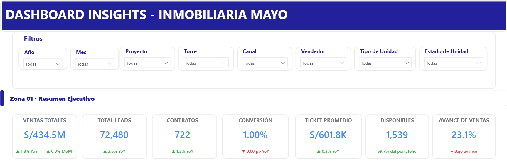
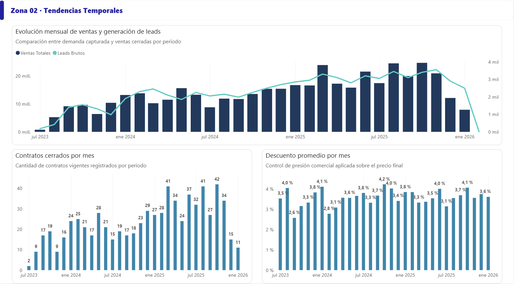
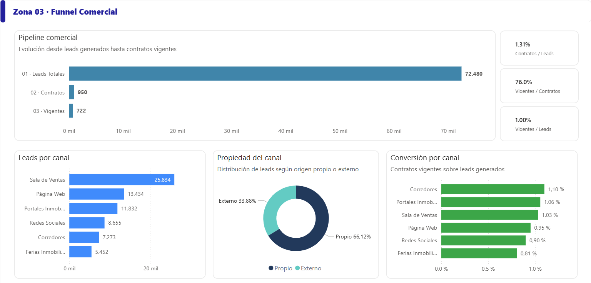
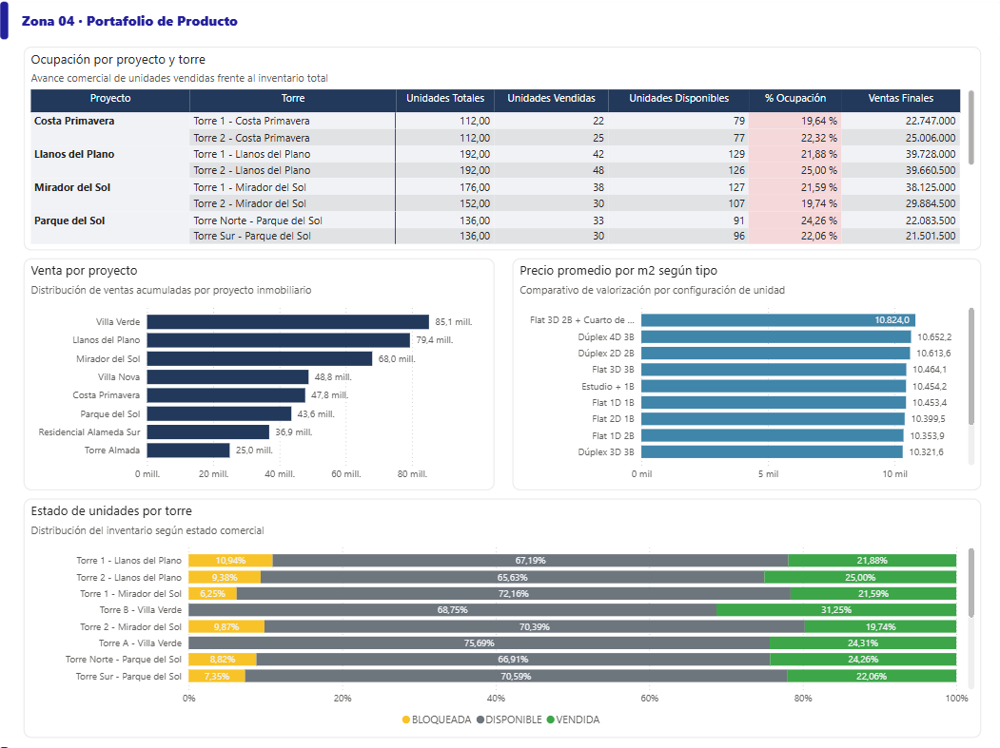
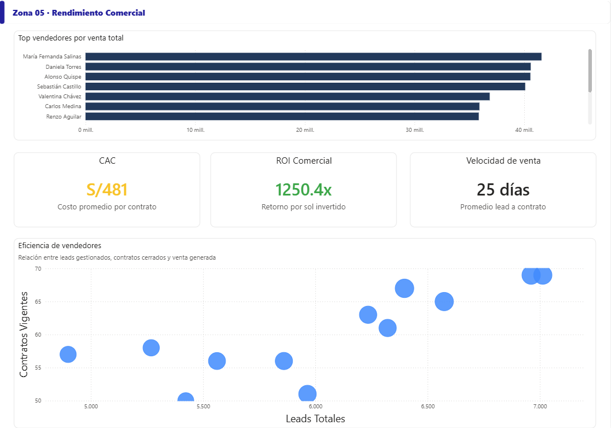

El dashboard fue estructurado como una lectura ejecutiva. Cada zona responde una pregunta concreta y permite que gerencia comercial, marketing y ventas puedan identificar rápidamente dónde se generan los leads, dónde se convierten y qué oportunidades de mejora existen.

Zona 01 · Resumen Ejecutivo
Presenta los indicadores principales del negocio: ventas totales, leads, contratos, conversión, ticket promedio, unidades disponibles y avance de ventas. Esta zona funciona como una vista de control para entender rápidamente la salud comercial del periodo seleccionado.
Pregunta que responde: ¿cómo va el desempeño comercial general?

Zona 02 · Tendencias Temporales
Analiza la evolución mensual de ventas, generación de leads, contratos cerrados y descuento promedio. Esta sección permite identificar meses con mayor actividad comercial, posibles estacionalidades y periodos con presión comercial reflejada en descuentos.
Pregunta que responde: ¿cómo evolucionan ventas, leads y contratos en el tiempo?

Zona 03 · Funnel Comercial
Muestra el avance desde leads totales hasta contratos y contratos vigentes. Además, compara la generación de leads y conversión por canal, diferenciando la propiedad del canal entre propio y externo. Esta zona ayuda a evaluar la eficiencia de adquisición y cierre comercial.
Pregunta que responde: ¿qué canales generan leads y cuáles convierten mejor?

Zona 04 · Portafolio de Producto
Evalúa la ocupación por proyecto y torre, ventas por proyecto, precio promedio por metro cuadrado según tipo de unidad y estado de unidades por torre. Esta zona conecta el desempeño comercial con la oferta inmobiliaria disponible.
Pregunta que responde: ¿qué proyectos, torres y tipos de unidad tienen mejor desempeño?

Zona 05 · Rendimiento Comercial
Resume la performance de vendedores mediante ranking de ventas, CAC, ROI comercial, velocidad de venta y eficiencia entre leads asignados y contratos vigentes. Esta zona permite comparar desempeño individual y orientar acciones de gestión comercial.
Pregunta que responde: ¿qué tan eficiente es el equipo comercial?